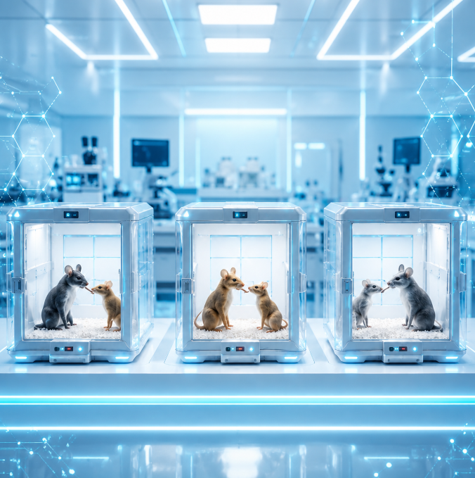
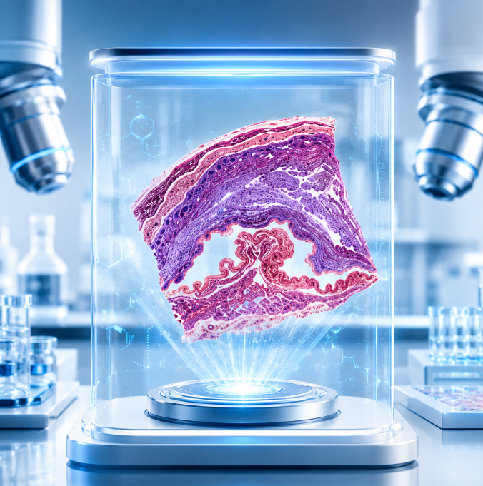

权生医药以科研问题为导向，不局限于单点实验服务，而是根据客户的疾病方向、机制假说、课题需求或产品开发目标，整合公共数据库挖掘、生信分析、多组学检测、细胞分子实验、动物模型验证、病理检测和药物分析等技术能力，协助客户完成从科学问题发现、机制验证到成果产出的全过程。
权生医药科技是一家专注于生物医药研发服务与创新转化的技术型企业，围绕生命科学研究与生物医药开发需求，提供覆盖课题设计、技术实施、数据分析、成果产出和产品开发的一体化解决方案。
围绕生命科学研究与生物医药开发需求，构建覆盖检测、分析、验证、评价与转化的一体化科研服务平台。
组学检测平台为生物医药研发服务提供基础分子数据，覆盖基因组学、转录组学、蛋白组学、代谢组学和表观遗传学等多维检测方向，为后续机制研究、靶点发现和产品开发提供数据支撑。
生物信息学分析平台围绕公共数据库与客户自有数据，开展差异分析、富集分析、免疫浸润、WGCNA、网络药理学、分子对接、单细胞/空间转录组和多组学整合分析，推动科研成果产出。
细胞分子实验平台专注细胞和分子层面的实验验证，覆盖细胞功能、分子检测、蛋白表达、细胞器构建、慢病毒转染、细胞侵袭迁移、ROS、JC-1染色及类器官构建等实验项目。

动物实验平台为生物医药研发提供体内实验支持，覆盖小鼠、大鼠、兔、犬、猪等多种动物实验，支持肿瘤、炎症、代谢、物理损伤等疾病模型，并配套PET-CT、Micro-CT和活体成像检测。

病理实验平台主要开展组织病理相关实验，支持HE染色、免疫组化、免疫荧光、Masson、PAS、油红O、天狼星红、硬组织切片等病理检测与结果解读，助力组织学验证和机制研究。
药物分析平台支持药物递送系统设计与合成、药物含量检测、药代动力学监测、安全性评价、药效学验证和递送系统开发，为药物发现、产品验证和转化开发提供技术支持。
组学检测平台可助力科研人员深入了解生物样本的分子特征，为后续机制研究和产品开发提供基础数据。从样本检测到下游分析，提供一体化服务。
生物信息学分析平台通过多组学联合分析，对生物数据进行深度挖掘，结合前沿算法发现数据背后的生物学意义，为科研成果产出和生物医药创新转化提供支持。
💡 平台优势：不仅提供基础分析，更擅长联合多组学分析，聚焦前沿机制挖掘、课题设计与成果产出。
细胞分子实验平台专注于细胞和分子层面的实验研究，可开展包括类器官在内的多种实验项目，为机制验证、药效评价和产品开发提供关键实验数据。
动物实验平台可为生物医药研发提供动物实验支持，覆盖多种动物类型、疾病模型和影像学检测，为机制研究、药效验证和产品转化提供体内实验依据。
病理实验平台可开展多种病理标本制作、染色及专业病理结果解读分析，帮助科研项目完成组织学验证、损伤评估和机制研究。
药物分析平台支持药物递送系统设计与合成、药物含量检测、药代动力学监测、药效学评价及初步安全性评价，服务药物发现、验证与转化开发。
💡 支持药物研发全链条：从成分鉴定、药代研究到递送系统设计，覆盖药物发现、验证与转化的完整路径。
六个环节环环相扣，覆盖科研项目的全生命周期。
覆盖西南、西北、华东多个城市，构建区域性科研服务网络。
公司依托多学科团队、联合实验平台和持续的项目积累，形成了兼具科研服务、技术转化和创新孵化能力的复合型生物医药平台。
权生医药面向高校、医院、科研机构和企业客户提供一站式科研技术服务，支持课题设计、实验实施、数据分析、论文产出、项目申报和产品开发。